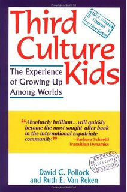
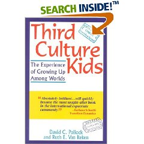

Resources >> Book
An Overview of Third Culture Kids: The Experience of Growing Up Among Worlds

Third Culture Kids: The Experience of Growing Up Among Worlds. David C. Pollock and Ruth E. Van Reken. ISBN 1-85788-295-4; Nicholas Brealey Publishing, 1999, 2001.
"Absolutely brilliant.. will quickly become the most sought-after book in the international expatriate community." - Barbara Schaetti, Transition Dynamics
Buy it on Amazon.com
List Price: $19.95
Price: $13.57
You Save: $6.38 (32%)
What is this book about?
Widely acclaimed as the first and only book to fully examine the legacy of transition and change shared by those who have grown up globally, Third Culture Kids speaks to the challenges and rewards of a multiculural childhood: the joy of discover and heartbreaking loss, its effect on maturing and personal identity, and the difficulty in making the transition home. Third Culture Kids give voice to children (and adults) everywhere who have grown up living abroad --Third Culture Kids (TCKs). Through interviews, poetry, and personal writings, the authors validate past experiences of TCKs, placing into clear context their shared heritage and profiling typical characteristics and emotions - from practical social skills, and identity development to restless and delayed adolescence. For parents, educators, and the thousands of adult TCKs around the world, the book brings to life the essence of the cultural, emotional, physical and geographical experiences of the nomadic life of a TCK.
"The insights are sound and research-based; the advice is practical and has far-reaching potential; and the personal stories by scores of people who grew up in a culture 'not their own' offe a richness of understanding regarding the internal world and extensive experience of third culture kids.. a must read" - David L. Wickstrom, Psychologist and Adult TCK.
"A goldmine of information... "
"This book is a well-written, clear and systematic treatment of what is surely a difficult theme, because everything pertaining to TCKs is so personal.
I had several "Aha" moments while reading this book. In fact, I ended up re-reading and underlining several passages.
Constantly being dislocated, constantly switching between educational systems and meeting all kinds of people impacts one more than one would care to imagine! A lot of it is definitely positive; there are some negative consequences, too.
TCKs bear the unintended consequences of decisions made by our parents, by the organizations they worked for, and by a host of a lot of factors we simply cannot control -- but which impact us in unpredictable ways. I would strongly recommend this to those who have lived abroad during their developmental years." Anil Jacob (NJ,USA)
What's inside the book?
An Overview of Third Culture Kids: The Experience of Growing Up Among Worlds.
"Sometimes the third culture experience is unfairly blamed for problems it didn't generate. At other times it is viewed as a pathology for which therapy is needed and from which one must recover. It is my [David Pollock's] conviction that being a TCK (Third Culture Kid) is not a disease, something from which to recover. It is also not simply okay--it is more than okay. It is a life healthily enriched by this very TCK experience and blessed with significant opportunities for further enrichment." (Introduction) (Credit to Mark Ruch)
Part I - Understanding the World of TCKs
Chapters 1-4 introduce us to the TCK through the story of a TCK (chapter 1), the definition of a TCK (chapter 2), why a cross-cultural childhood matters to the TCK (chapter 3), and why high mobility is an important and common theme in a TCK's life (chapter 4).
Part II - The TCK Profile
Chapters 5 and 6 cover the many benefits and challenges of growing up as a TCK:
- Expanded worldview vs. confused loyalties
- Three-dimensional view of the world vs. painful view of reality
- Cross-cultural enrichment vs. ignorance of the home (parental) culture
- Cultural chameleon: adaptability vs. lack of true cultural balance
- Hidden immigrants: blending in vs. defining the differences
- Prejudice: less vs. more
- Decisiveness: the importance of now vs. the delusion of choice
- Relation to authority: appreciative vs. distrustful
- Arrogance: real vs. perceived
Chapter 7 spells out the various skills and abilities most TCKs have: cross-cultural skills, observational skills, social skills, and linguistic skills.
Chapter 8 talks about the rootlessness and restlessness of TCKs and the problem with trying to define or even talk about where "home" is.
Chapter 9 describes how some of the relational patterns are uniquely different for TCKs and why that is so.
Chapter 10 delves into the developmental issues that confront TCKs, including early maturity and delayed adolescence, as well as delayed adolescent rebellion and the whole issue of having an identity in a "system."
Chapter 11 deals with unresolved grief. One of the reasons why this is such a big issue for TCKs is because of the many hidden losses that TCKs experience that may not be obvious or recognized. Dealing with these losses can then be compounded by the lack of permission to grieve, lack of time to process this grief, and by the additional non-hidden multiple and intense losses involved in leaving the field. The authors do an excellent job of delineating what these hidden and non-hidden losses frequently are. In the latter part of this chapter the authors describe the whole process of grieving as it relates to TCKs.
Part III - Maximizing the Benefits
Chapters 12-18 give good advice and suggestions as to how one can maximize the benefits of being a TCK:
- building strong foundations for TCKs
- dealing with transitions
- meeting educational needs
- managing re-entry to the "Homeland"
- the role of sponsoring agencies.
This section concludes on the positive note that it is never too late for TCKs to deal with their issues.
The book ends with appendices that include the results of a survey on Adult TCKs, two selected writings of TCKs, as well as a great list of worldwide resources for TCKs. The final note is a bibliography of other books on TCKs.
Where can I buy it?
 1. You can buy it on Amazon.comList Price: $19.95
Price: $13.57
You Save: $6.38 (32%)
2. You can buy it at BetterWorld.com
and support literacy programs like Room to Read, Books for Africa , Worldfund, National Center for Family Literacy. (recommended choice)
Third Culture Kids: The Experience of Growing Up Among Worlds. David C. Pollock and
Ruth E. Van Reken. ISBN 1-85788-295-4; Nicholas Brealey Publishing, 1999, 2001.
Product Details
- Paperback: 360 pages
- Publisher: Nicholas Brealey Publishing; 2Rev Ed edition (May 25, 2001)
- ISBN-10: 1857882954